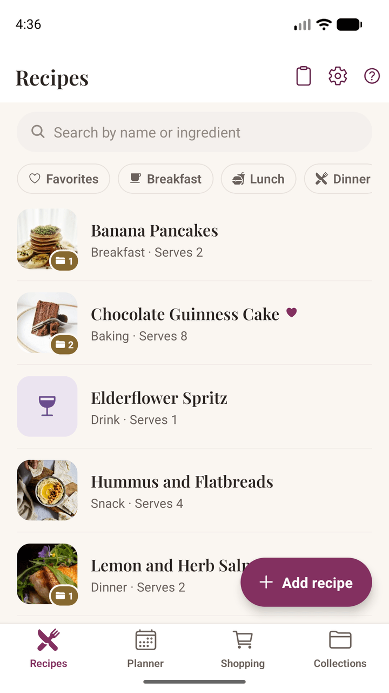
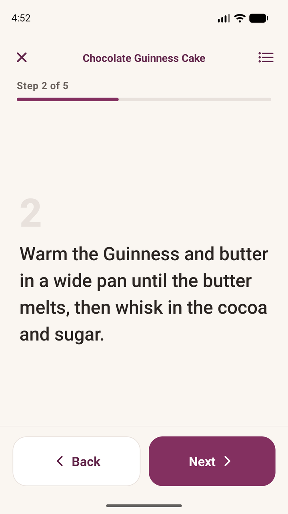
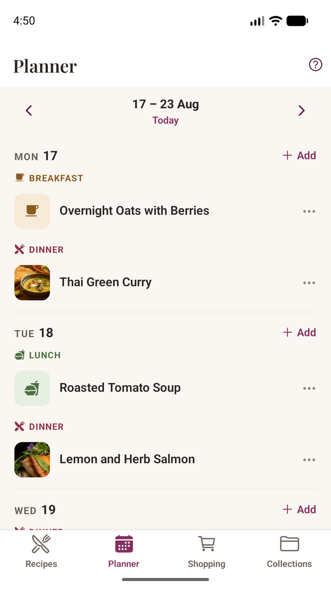
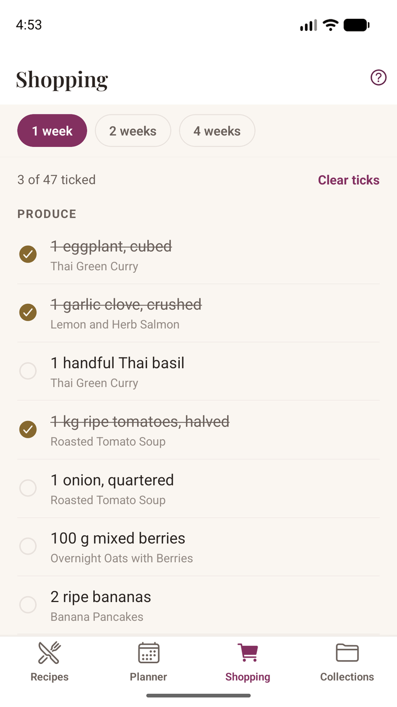
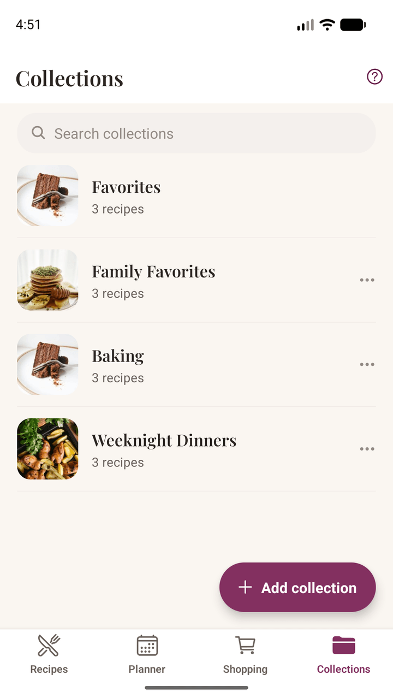

Adding recipes

Import from a website or a social post
The quickest way is to send the recipe to Damson Kitchen from wherever you found it. In your browser, Instagram, or your notes app, tap Share and pick Damson Kitchen. The app reads the page and fills in the title, ingredients, and method for you to check before saving.
You can also tap the clipboard icon at the top of My Recipes and paste a link or the recipe text directly.
Two things worth knowing:
- Always give it a quick read before saving. Recipe pages vary enormously, and the app is deliberately cautious — it would rather leave something as an ingredient than guess wrong and quietly drop it.
- Imported recipes never bring a photo with them. That's on purpose: a photo on someone else's site belongs to whoever took it. You get a link back to the original instead, and you're free to add your own picture.
Write your own
Tap Add recipe and fill in as much or as little as you like — only a title is required.
- Ingredients are just typed as you'd say them — "200g plain flour", "2 large eggs", "a few sprigs of thyme". Underneath, the app works out the amount so it can scale the recipe later. It shows you what it understood in small grey text beneath the line; tap that to correct it if it got something wrong.
- Vague amounts are fine. "A good handful of parsley" stays exactly as you wrote it. Nothing is invented, and the line simply sits out of any scaling.
- Steps can be reordered by dragging the numbered circle.
- Photos: tap + to take a photo of the finished dish or choose one from your library. The first photo is the cover — tap any other photo to promote it.
Ingredient sections
Recipes with parts — a pastry and a filling, a cake and its icing — can group ingredients under headings. On import the app spots headings like "For the topping" and sets them up for you. To add one yourself, use the Section action above the ingredient list.
Deleting a section never throws ingredients away without asking. If it has anything in it, you'll be offered the option to move those ingredients into the section next to it instead. On the last remaining section the control becomes Remove heading, which turns the list back into a plain one with everything intact.
Cooking

Change the number of servings
If a recipe says how many it serves, a stepper sits at the top of the ingredients. Change the number and every amount rescales — shown as kitchen fractions, so you get ¾ tsp rather than 0.75. Tap the number itself to type one instead of tapping + repeatedly.
This never rewrites the recipe. It's a view, and the original amounts are always what you saved. Tap the "scaled from" hint to go back.
Tap any ingredient to check it off as you gather it. Those ticks clear when you leave the recipe.
Cook Mode
Tap Cook to get one step at a time in large text, sized to be read at arm's length with floury hands. Swipe or use the full-width buttons to move between steps, and pull up the bottom sheet at any point to check the ingredients without losing your place.
Your screen stays awake for as long as Cook Mode is open, and goes back to normal the moment you leave it.
If you scaled the servings before tapping Cook, Cook Mode shows the scaled amounts too.
Planning the week

The planner
The Planner tab shows one week at a time, with breakfast, lunch, dinner, and snack slots on each day. Pick a day, choose a recipe, and set the slot.
- Occasions are free text — "Sunday lunch", "Mum's birthday". Labels you've used before are offered as suggestions.
- Head count lives on the meal, not the recipe. The same dish can feed four on Tuesday and twelve at a party. Leave it blank to use whatever the recipe says.
- Opening a planned meal shows it already scaled to that head count.
You can plan the same recipe twice in one day, or two recipes in one slot — neither is treated as a mistake.
The shopping list

The Shopping tab builds itself from what you've planned, grouped by supermarket aisle so you're not criss-crossing the shop. Choose whether to cover the next one, two, or four weeks.
- It starts from today, not from Monday. A meal you already ate shouldn't follow you round the shop.
- Amounts are added up where they can be. 200g flour for one meal and 150g for another becomes 350g.
- Different units stay on separate lines. "200g flour" and "2 cups flour" aren't combined, because converting between them properly is something the app doesn't do yet — and an invented total is worse than two honest lines.
- Ticks stay put as you shop, and survive closing the app.
Organizing

Collections
Collections are named groups — "Weeknight dinners", "Christmas", "Things the kids will actually eat". A recipe can be in as many as you like. Add one from a recipe's own page using the folder button, or create collections from the Collections tab.
Deleting a collection never deletes the recipes inside it.
Favorites
Tap the heart on any recipe. Once you've hearted something, a Favorites filter appears on My Recipes and a Favorites group appears at the top of Collections. It can't be renamed or deleted — unheart a recipe to take it out.
Meal types and searching
Give a recipe a type — breakfast, dinner, dessert, baking, and so on — and it gets a matching icon and a filter chip. Only types you've actually used are offered, so the row stays short.
Search looks at ingredients as well as titles, so searching "chorizo" finds the recipes that use it even when it isn't in the name. Search and the type filters work together.
Notes
Every recipe has a notes field for the things you'd otherwise scribble in a margin — "needed 10 minutes longer", "use half the sugar". Notes are yours alone and never travel with a shared recipe.
Sharing a recipe
Open a recipe and tap the share icon in the top bar to send it through your phone's usual share sheet — a message, an email, whatever you normally use. Nothing is uploaded and no file is created. The message is written on your phone and handed straight to the app you pick.
What gets sent depends on where the recipe came from:
| Recipe | What's sent |
|---|---|
| One you wrote yourself | The full recipe as plain text |
| One you imported | The title and a link to the original |
That second row is deliberate. If someone else wrote the recipe, the fair thing is to point at their page rather than retype their words into a message — so credit stays where it belongs.
It's sent as ordinary text, so whoever receives it can just read it, with or without the app. If they do have Damson Kitchen, the message is laid out so it imports cleanly.
Backups and moving to a new phone
Because your recipes live on your phone rather than on our servers, keeping a backup is worth a minute of your time — and it's the same feature that moves everything to a new phone.
Export
Go to Settings → Data & Backup → Export My Data. The app bundles every recipe, collection, note, planned meal, and photo into a single file and hands it to your share sheet. Send it wherever you like — a cloud drive, an email to yourself, another device.
We never receive that file. It's created on your phone and goes only where you send it.
Import
On the new phone, install the app and choose Settings → Data & Backup → Import, then pick the file. You'll be asked how to handle it:
- Merge adds everything from the file alongside what's already there. This is the safe choice and the one offered first.
- Replace clears the recipes on this phone first. Use it when you're setting up a new phone and want an exact copy.
A backup made by an older version of the app will always still import.
Your appearance and week-start choices aren't in the file — a backup carries your recipes, not the settings of the phone it came from.
Settings
- Appearance — Light, Dark, or System. System follows whatever your phone is doing, including its schedule.
- Week starts on — Monday or Sunday, whichever you think in. The planner re-frames the week you're looking at rather than jumping you elsewhere.
Troubleshooting
An import came back mostly empty
Some pages don't publish their recipe in a way any app can read, and a few block automated readers entirely. The fix is usually to copy the recipe text yourself: select it, copy, then use the clipboard icon on My Recipes and paste. That path works on anything you can select.
Sharing from TikTok only gives the video link
TikTok shares the link without the caption, and the recipe is in the caption. Copy the caption text, then paste it using the clipboard icon. The app will tell you when it spots this and point you the same way.
Instagram gave nothing back
Instagram sometimes serves a sign-in page instead of the post. Waiting a moment and trying again often works; failing that, copy the caption and paste it.
A recipe's photo has gone
Photos are files on your phone, so a phone-cleaning app or a manual clear-out can remove them. The recipe itself is unaffected — it falls back to its meal-type icon or its initial, and you can add a new photo any time. This is a good argument for an occasional Export.
An amount didn't scale
Only amounts the app could read get scaled. "A few sprigs of thyme" has no number to multiply, so it's shown exactly as you wrote it. If a line should have been understood, tap the grey interpretation beneath it in the editor and correct it.
Ingredients ended up as a method step, or a heading became an ingredient
Import works from the shape of the text, and some pages are genuinely ambiguous. Everything is editable after import — tap Edit and move the line where it belongs.
Still stuck?
We'd rather hear about it than have you struggle. In the app, open Settings → Get Support — it starts an email with your app version and phone model already filled in, which usually saves a round of questions. Those details are in the body of the message, so you can read them and delete anything you'd rather not send.
Email: hello@damsonkitchen.com
If something's wrong with an import, telling us the page you were importing from helps enormously — it's usually the fastest route to a fix that helps everyone.